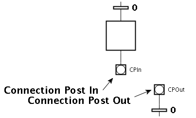

Edit: Opens the connection post's edit dialog.

Remote Connection Post (full path): Global references of the remote connection post.

Connection posts are used to connect JGrafchart language elements without graphical connections. They can be used to split up function charts and can conveniently be used to avoid "spaghetti function charts". A connection post connection consists of one Connection Post In object and one Connection Post Out object.
Note: Both connection posts in a connection post connection must specify each other for the connection to work properly.
Note: Using connection posts it is possible to create invalid links and there are no checks for this. Thus is has to be avoided manually.
Hint: Hovering the mouse over a connection post highlights both it and its referenced connection post in red if the referenced connection post was found.
Hint: When hovering the mouse over a connection post, its reference is shown as a tool tip.
Note: Edit is chosen automatically instead of showing a context menu with only one choice.
Edit: Opens the connection post's edit dialog.
Remote Connection Post (full path): Global references of the remote connection post.